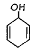
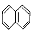
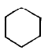
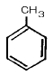
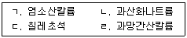

위험물기능사 (2003-07-20 기출문제)
1과목: 화재 예방과 소화방법
1. 할로겐화물 소화제에 해당되지 않는 것은?
- 사염화탄소
- 이산화탄소
- 일염화일브롬화메탄
- 이브롬화사플르오르화에탄
(정답률: 60%)

2. 분말소화기는 어떤 미립자를 방습 가공한 것을 탄산가스나 질소가스의 압력으로 분사 시키도록 만든 것이다. 이 미립자는?
- 탄산수소나트륨
- 탄산나트륨
- 탄산칼슘
- 탄산알루미늄
(정답률: 59%)
3. CO2 에 대한 설명으로 옳지 않은 것은?
- 무색, 무취기체로서 공기보다 무겁다.
- 물에는 약알칼리성을 나타낸다.
- 탄산가스라 부른다.
- 상온에서 압력을 가하면 쉽게 액화한다.
(정답률: 20%)
4. 화재의 종류는 유류화재로서 연소 후 아무것도 남지 않은 화재는?
- A급 화재
- B급 화재
- C급 화재
- D급 화재
(정답률: 88%)
5. 알코올포가 소화제로 가장 잘 이용될 수 있는 것은?
- 경유
- 메틸 알코올
- 등유
- 가솔린
(정답률: 65%)
6. 화재발생 시 사용하는 소화제를 짝지어 놓은 것으로 적당하지 않은 것은?
- (C2H5)3Al – 팽창질석
- C2H5OC2H5 - CO2
- C6H2(NO2)3OH – 물
- C6H5NO2 - 물
(정답률: 30%)
7. 소화 활동설비가 아닌 것은?
- 무선통신보조설비
- 연결송수관설비
- 옥내소화전설비
- 비상콘센트설비
(정답률: 33%)
8. 폐쇄형 스프링 클러헤드는 설치장소의 평상시 최고 주위온도가 39℃ 미만일 경우 표시온도는 얼마로 설치하여야 하는가?
- 70℃ 미만
- 73℃ 미만
- 76℃ 미만
- 79℃ 미만
(정답률: 25%)
9. 자동화재탐지설비인 연기감지기를 계단 및 경사로에 설치하는 경우 수직거리 몇 m 마다 1개 이상씩 설치하여야 하는가? (단, 감지기의 종류는 제1종 및 제2종이다.)
- 10m
- 15m
- 20m
- 25m
(정답률: 40%)
10. 금속분의 연소 시 주수소화 하면 위험한 원인으로 옳은 것은?
- 물에 녹아 산이 된다.
- 물과 작용하여 유독가스를 발생한다.
- 물과 작용하여 수소가스를 발생한다.
- 물과 작용하여 산소가스를 발생한다.
(정답률: 86%)
11. 위험물 제조소에 화재발생을 통보하는 기계· 기구 또는 설비인 경보설비가 아닌 것은?
- 비상방송설비
- 단독경보형감지기
- 비상콘센트설비
- 자동화재탐지설비
(정답률: 63%)
12. 높이 70m 이상의 소방대상물로서 연결송수관설비의 최상층에 설치된 노즐선단의 방수압력은 얼마 이상인가?
- 1.7kg/cm2
- 2.5kg/cm2
- 3.5kg/cm2
- 4.5kg/cm2
(정답률: 35%)
13. 할로겐화물 소화기의 사용금지 장소가 아닌 곳은?
- 무창층
- 지하층
- 사무실의 바닥면적이 20m2 미만인 곳
- 배기를 위한 유효한 개구부가 있는곳
(정답률: 62%)
14. 자연발화성 물질 및 금수성물질의 위험물 화재 시 가장 적당한 소화방법은?
- 분무소화기
- 포말소화기
- 할론소화기
- 마른 모래
(정답률: 88%)
15. B 급 화재 시 물의 사용을 금지하는 이유는?
- 화재면이 확대된다.
- 유독가스가 발생한다.
- 착화온도가 낮아진다.
- 폭발의 위험성이 증가한다.
(정답률: 72%)
16. 수동식소화기 또는 간이소화용구를 설치해야 하는 소방대상물의 연면적은?
- 16.5m2이상
- 67m2이상
- 50m2이상
- 33m2이상
(정답률: 6%)
17. 할론 1301 소화제의 화학식은?
- CF3Br
- CBr3F
- CCl3F
- CHFClBr
(정답률: 82%)
18. 제 4류 위험물의 화재에 가장 널리 쓰이는 소화방법은?
- 주수 소화
- 냉각 소화
- 질식 소화
- 분무 소화
(정답률: 87%)
19. 외벽이 내화구조가 아닌 것에 있어서의 소요단위 1단위의 연면적은 얼마인가?
- 10m2
- 33m2
- 50m2
- 100m2
(정답률: 47%)
20. 소화설비에서 옥외소화전이 2개 설치 되어 있다면 수원의 수량은 얼마이어야 하는가?
- 8m3
- 10m3
- 12m3
- 14m3
(정답률: 38%)
2과목: 위험물의 화학적 성질 및 취급
21. 다음 설명 중 틀린 것은?
- 과산화나트륨은 흡습성이 있다.
- 무기과산화물은 금수성 위험물이라 생각할 수 없다.
- 과산화바륨에 황산을 반응시키면 과산화수소가 생긴다.
- 과산화물의 보관은 일광의 직사광선을 피하여 보관하여야 한다.
(정답률: 35%)
22. 다음은 염소산칼륨의 유해성에 관한 설명이다. 올바른 것은?
- 혈액에 작용하여 독작용을 한다.
- 시신경계에 작용하여 실명하게 된다.
- 단백질을 분해 할 수 있는 능력을 갖고 있다.
- 해독법은 묽은 수산화나트륨 용액과 우유를 복용토록 한다.
(정답률: 20%)
23. 과산화마그네슘 성상 및 취급에 관한 설명으로 틀린 것은?
- 산화제와 혼합하여 가열하면 폭발 위험성이 있다.
- 습기나 물에 의하여 활성 산소를 방출한다.
- 산류에 녹아서 과산화수소로 된다.
- 녹색의 결정이다.
(정답률: 40%)
24. 무수크롬산(CrO3)의 성질에 관한 설명으로 맞는 것은?
- 물에 녹지 않는다.
- 에테르, 황산 등에 잘 녹는다.
- 적색 결정의 강력한 환원제이다.
- 유황 금속분과 같은 물질과 혼합시 가열, 충격으로부터 폭발 위험성이 현저히 작아진다.
(정답률: 40%)
25. 제2류 위험물의 일반적 성질에 대한 설명 중 옳은 것은?
- 물과 접촉시 발열한다.
- 낮은온도에서 착화하기 쉬운 속연성물질이다.
- 강력한 산화제로서 수소와 결합하여 환원되기 쉽다.
- 마찰, 충격에 안정하며, 연소시 연소열과 연소온도가 낮다.
(정답률: 8%)
26. 제2류 위험물인 마그네슘분의 성질에 관한 설명중 틀린 것은 ?
- 상온에서는 물을 분해하지 못해 안정하다.
- 강산과 반응하여 수소가스를 발생시킨다.
- 알칼리토금속에 속하는 은백색의 경금속이다.
- 공기중 연소시 CO2와 같은 질식성가스로 소화한다.
(정답률: 32%)
27. 적린의 성질에 대하여 잘못 기술한 것은?
- 암적색 분말로 조해성이 있다.
- 황린에 비해 화학적 활성이 적다.
- 연소시 유독한 인화수소 기체가 발생한다.
- 산화제와 혼합시 마찰, 충격에 쉽게 발화한다.
(정답률: 47%)
28. 황린의 성상으로 잘못된 것은?
- 이황화탄소(CS2)나 알코올에 잘 녹는다.
- 담황색의 액체로 계란썩은 냄새가 있다.
- 독성이 있는 물질이며 공기중에서 인광을 낸다.
- 물속에 저장할 때는 약알칼리성으로 하는 것이 좋다.
(정답률: 29%)
29. Ca3P2(인화칼슘)의 성질에 대한 설명 중 틀린 것은?
- 비중은 2.5 정도이다.
- 건조한 공기중에서는 안정하다.
- 물과 반응하여 포스겐을 발생한다.
- 에테르에 녹지 않고, 융점은 1600℃ 정도이다.
(정답률: 55%)
30. 다음 제3류 위험물 중 살충제로 사용되며 순수한 물질일 때 암회색의 결정으로서 이황화탄소에 녹는 물질은?
- 인화아연(Zn3P2)
- 수소화나트륨(NaH)
- 금속칼륨(K)
- 금속나트륨(Na)
(정답률: 57%)
31. 다음 제4류 위험물 특수인화물류 중 물에 잘 녹지 않으며 비중이 물보다 작고, 인화점이 -45℃ 정도인 위험물은?
- 아세트알데히드
- 산화프로필렌
- 디에틸에테르
- 니트로벤젠
(정답률: 44%)
32. 다음 물질 중 소방법상 제4류 위험물, 제1석유류에 해당되는 것은?
- 등유
- 콜로디온
- 톨루엔
- 아세트산
(정답률: 40%)
33. 다음은 니트로글리세린에 대한 설명이다. 옳은 것은?
- 시판공업용 제품은 물에 의해 분해된다.
- 니트로기 5개를 가지며 제5류 위험물의 니트로화합물에 속한다.
- 대기중에서 점화하면 연소하지만 폭발을 일으키는 일은 없다.
- 상온에서는 액체이지만 겨울철에는 동결하며, 충격에 대해서 매우 예민하며 폭발을 일으키기 쉽다.
(정답률: 65%)
34. 트리니트로톨루엔(TNT)은 어떤 물질의 유도체인가?




(정답률: 54%)
35. 피크르산은 페놀의 어느 원소와 NO2가 치환된 것인가?
- O
- H
- C
- OH
(정답률: 40%)
36. 황산(96%)의 성상에 관한 설명 중 올바른 것은?
- 제6류 위험물에 속하며 비휘발성 액체이다.
- 환원제로 사용하며, 유황을 제조 할 때 이용된다.
- 무색액체이며 물과 혼합할 때 흡열반응을 한다.
- 무색결정이며 열에 의하여 산소가 발생한다.
(정답률: 10%)
37. 제6류 위험물의 공통된 특징은?
- 유기화합물
- 환원성 물질
- 가연성 물질
- 산화성 물질
(정답률: 70%)
38. 이동탱크저장소의 탱크 내부의 칸막이는 용량 얼마마다 설치하여야 하는가?
- 1000L
- 2000L
- 3000L
- 4000L
(정답률: 40%)
39. 황린의 저장 보호액을 pH9(약알칼리성)로 유지하는 이유로 옳은 것은?
- 착화점을 낮추기 위하여서
- PH3의 생성을 방지하기 위하여
- P2O5의 생성을 방지하기 위하여
- 적린으로 변이하는 것을 방지하기 위하여서
(정답률: 42%)
40. 다음 금속분 중 지정수량이 다른 물질은?
- Al분
- Zn분
- Fe분
- Sb분
(정답률: 30%)
41. 다음 중 제1종 가연물에 해당되는 조건을 만족시키는 것은?
- 상온에서 고체이고 40℃미만에서 가연성 증기 발생
- 40℃이상 100℃미만에서 가연성 증기발생
- 상온에서 액체이고 30℃미만에서 가연성 증기발생
- 100℃이상 200℃ 미만에서 가연성 증기발생
(정답률: 36%)
42. 위험물 제조소의 건축물의 자연배기방식 환기설비중 바닥면적 150m2마다 1개이상 설치하는 급기구의 크기로 옳은 것은?
- 200cm2이상
- 400cm2이상
- 600cm2이상
- 800cm2이상
(정답률: 29%)
43. 다음 각 물질의 저장방법으로 틀린 것은?
- 황은 정전기가 축적되지 않게 저장한다.
- 황린은 물속에 저장한다.
- 적린은 인화성 물질과 결리시켜서 저장된다.
- 마그네슘은 물로 습하게 하여 저장한다.
(정답률: 77%)
44. 니트로셀룰로오스의 저장 및 취급하는 사항에 관한 설명 중 틀린 것은?
- 타격, 마찰 등을 피한다.
- 일광이 잘 쪼이는 곳에 저장한다.
- 열원을 멀리하고 냉소에 저장한다.
- 알코올로 습면하고 안정제를 가해서 저장한다.
(정답률: 78%)
45. 석유속에 저장되어 있는 금속조각을 떼어, 불꽃반응을 하였더니, 노란 불꽃을 나타냈다. 어떤 금속인가?
- 칼륨
- 나트륨
- 칼슘
- 리튬
(정답률: 73%)
46. 알칼리금속의 과산화물의 성질로서 맞는 것은?
- 단독으로 타지 않는다.
- 비중은 1보다 작다.
- 분해가 어렵고 산소를 쉽게 방출한다.
- 물과 격렬하게 반응하여 산소를 방출하나 발열하지 않는다.
(정답률: 22%)
47. 다음 중 물과 작용해서 공기보다 무겁고 독성이 있는 기체를 발생시키는 물질은 어느 것인가?
- K
- Ca3P2
- CaC2
- CaSO4
(정답률: 44%)
48. 크실렌의 이성질체는 몇 가지가 있는가?
- 1
- 2
- 3
- 4
(정답률: 60%)
49. 다음중 산과 접촉하면 중합하여 발열하는 것은?
- CH3CHO
- CH3COOH
- CH3CH2OH
- C2H5OC2H5
(정답률: 21%)
50. 산화프로필렌의 증기나 액체가 구리, 은, 마그네슘과 접촉했을 때 생성되는 물질은 무엇인가?
- 아세트산
- 프로판
- 부탄
- 아세틸라이드
(정답률: 39%)
51. 질산에스테르류에 속하지 않는 것은?
- 니트로셀룰로오스
- 질산에틸
- 니트로글리세린
- 트리니트로톨루엔
(정답률: 76%)
52. 소방법에서 규제하는 진한 질산은 그 비중이 얼마 이상인가?
- 1.29
- 1.39
- 1.49
- 1.59
(정답률: 66%)
53. 가열할 경우 액체 표면에 적갈색의 증기가 떠 있는 것은?
- 발연황산
- 진한질산
- 진한황산
- 무수크롬산
(정답률: 38%)
54. 제5류 위험물인 셀룰로이드의 성질을 설명한 것 중 옳지 않은 것은?
- 공기와의 접촉시 열분해가 진행되어 자연발화가 용이하다.
- 가열하면 145℃ 부근에서 백연을 발생하고 발화한다.
- 불에 닿으면 바로 착화되나 물에 쉽게 용해되므로 유독가스는 발생되지 않는다.
- 질화도가 낮은 니트로셀룰로오스에 장뇌와 알코올을 녹여 교질 상태로 만든다.
(정답률: 62%)
55. 붉은 갈색이며, 무정형으로 CS2에 녹지않고, 녹는점이 일정치 않은 것은?
- 사방황
- 단사황
- 고무상황
- 침강황
(정답률: 45%)
56. 톨루엔의 성질이 아닌 것은?
- 물에 잘 녹는다.
- 수지를 잘 녹인다.
- 고무를 잘 녹인다.
- 유기용제에 잘 녹는다.
(정답률: 74%)
57. 벤젠의 위험성에 대한 표현이 적절하지 않은 것은?
- 휘발하기 쉽다.
- 인화점이 낮은 액체이다.
- 증기는 유독하여 흡입하면 위험하다.
- 이황화탄소 보다 착화온도가 낮다.
(정답률: 80%)
58. 물과 접촉시 화재위험이 가장 크다고 생각되는 것은?
- Na
- CaO
- NaOH
- P2
(정답률: 43%)
59. 액체 위험물의 운반용기 중 금속제 내장용기의 최대 용적은 몇 L 인가?
- 5
- 10
- 20
- 30
(정답률: 28%)
60. 다음 중 제1류 위험물들로만 옳게 짝 지워 놓은 것은?

- ㉠, ㉡, ㉢
- ㉠, ㉡, ㉣
- ㉡, ㉢, ㉣
- ㉠, ㉡, ㉢, ㉣
(정답률: 36%)